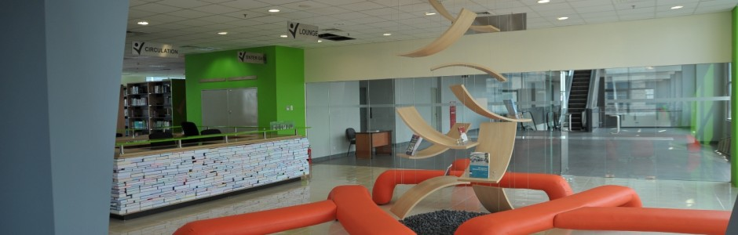
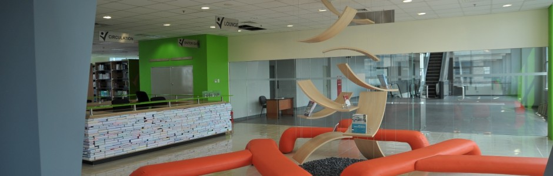

Education for a Better Life
Kalbis intitut menerapkan konsep pembelajaran yang kondusif dan interaktif antara dosen dan mahasiswa, didukung oleh staf pengajar akademisi dan praktisi yang memiliki kopetensi dan pengalaman dibidangnya, lulusan perguruan tinggi terkemuka di dalam dan luar negri serta memilika komitmen tinggi pada disiplin ilmu yang dimiliki. Proses belajar mengajar menerapkan metode diskusi kasus dan active learning antara staf pengajar dan mahasiswa dalam ruang kuliah maupun laboratorium yang representatif, sejuk dengan sarana audio visual yang memadai,sehingga menciptakan lingkungan belajar mengajar yang kondusifdan optimal. Para mahasiswa pun akan memiliki kesempatan untuk praktek atau magang diberbagai perusahaan, sehingga akan meningkatkan ketrampilan baik hardskill maupun softskill nya yang akan menjadi modal besar untuk mendapatkan pekerjaan ketika lulus nantinya.
Keunggulan Kalbis Institute:
- Program studi dengan kurikulum yang dinamis dan inovatif
- Lulusan yang kompetitif di dunia kerja dan wirausaha
- Gedung kampus yang futuristik dan nyaman untuk mendukung perkuliahan
- Fasilitas kampus yang lengkap
- Terhubung dengan grup usaha Kalbe
- Manajemen mutu pendidikan oleh Bina Nusantara
- Lokasi kampus yang strategis
- Investasi pendidikan yang terjangkau
Fasilitas Kampus:
- Ruangan kelas yang nyaman
- Lab. Komputer, Lab.Akuntansi, Studio Ilmu Komunikasi
- Perpustakaan yang dilengkapi dengan ruang diskusi
- Wifi/hotspot area
- Ruang serba guna dan kafetaria
- Fasilitas olahraga
- Sarana Ibadah
- Fasilitas mesin ATM & virtual account
- Lahan parkir yang luas
Untuk informasi lebih lengkap, kunjungi link berikut ini:
Kalbis home | Profil | Program | Berita | Kampus | Admisi | Hubungi Kami